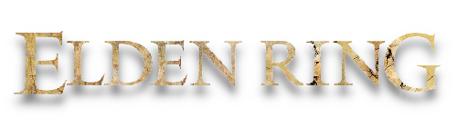

Em Elden Ring, o jogador incorpora um Maculado, guerreiro guiado pela força da Graça para portar o poder do Anel Prístino e torna-se um Lorde Prístino. A trama tem como cenário as Terras Intermédias, um local governado pela Rainha Marika.

X